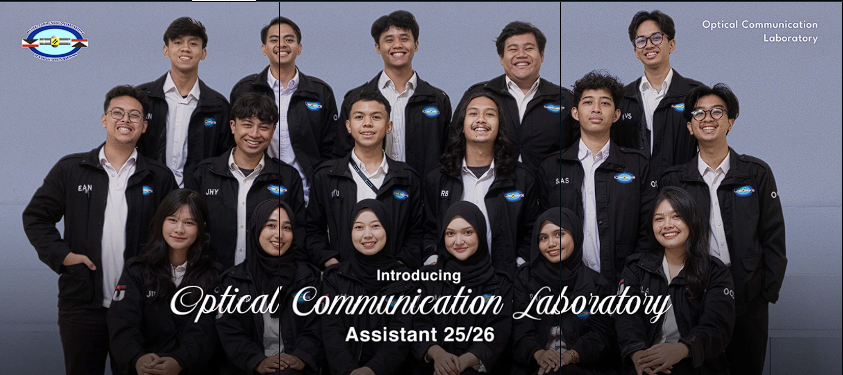
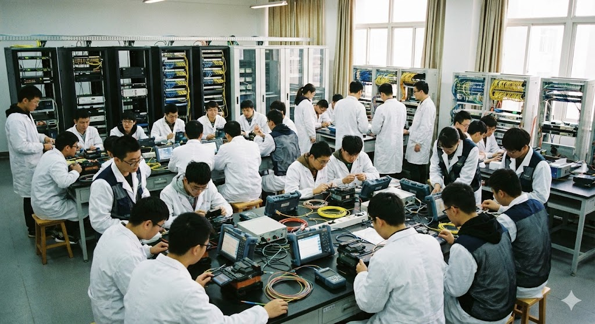

Welcome to Opticom Laboratory
Center of Excellence in Optical Fiber & Wireless Communication Research at Telkom University.

Welcome To OPTICOM LABORATORY
Advanced Optical Innovation
Pioneering research in Visible Light Communication (VLC), Free Space Optics (FSO), and Li-Fi Technology.

Welcome To OPTICOM LABORATORY
Develop Your Skills
Join our Study Groups, Practicums, and Workshops to master Optical Communication Systems.